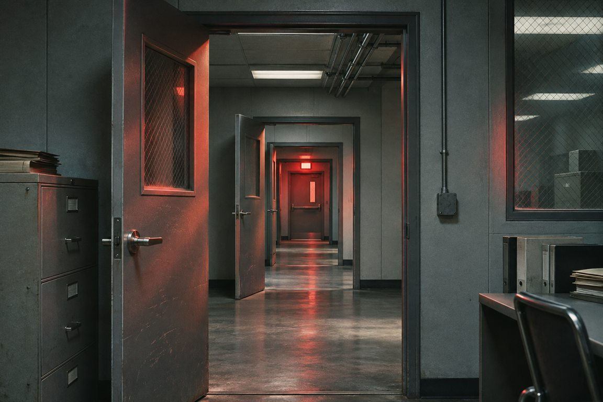
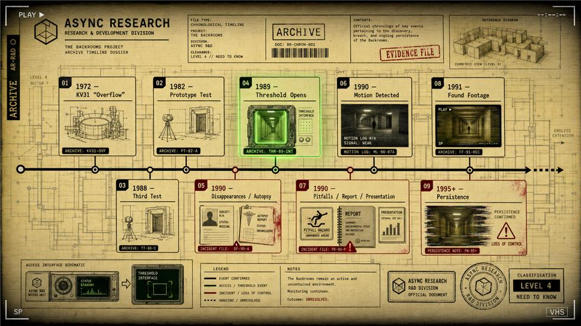

Backrooms Kane Pixels Timeline
A chronology of Kane Pixels’ fictional Backrooms, from Async Research and the Threshold to later incidents. It includes a cast of people and organizations, layered timelines and a short glossary.

On this page
Summary
Detailed timeline of the Kane Pixels universe focusing on Async Research, Threshold, and the transition of the Backrooms concept from corporate experiment to spatial, biological, and narrative disaster.
What does it actually contain?
This source is not just a list of episodes. It works as a chronological reconstruction of the main lore:
- when Async starts experimenting with spatial distortion
- How to open permanent access to Backrooms
- What signs show that the phenomenon contaminates the real world
- how bodies, disappearances, entities and containment protocols appear
- How the corporate project mutates from utopian promise to cover-up
Why it matters
The timeline shows how an internet aesthetic can become a coherent mythology with a documentary tone.
Main timeline


1972—Project KV31 "Overflow"
- Async Research Institute was already testing spatial distortion in the early 1970s.
- The "Overflow" event suggests a first serious accident associated with a system overload.
- The detail of the greenish glow and the need to stop the experiment establishes an important signal: access to the Backrooms is not born as an accidental discovery, but as a product of a previous and deliberate technical line.
- In narrative terms, this point acts as the "secret prologue" to the entire saga.
1982 — Prototype Portal Test
- Async runs a prototype test with the low proximity magnetic distortion system.
- There is still no stable portal, but there is a technical and institutional language that frames the phenomenon as an engineering project, not as pure paranormal.
- This step is key because it gives the series a corporate R&D anchor: machinery, testing, iteration and scaling.
1988—The Third Test
- The "Third Test" shows an intense but unstable opening of Threshold.
- The portal emits an extreme light and confirms that the infrastructure is already advanced enough to border on an operational connection.
- It also makes clear the energy cost and fragility of the procedure.
- Dramatically, this episode functions as the last rehearsal before breaking something irreversibly.
1989 — First Contact and earthquake
- On October 17, 1989, Async achieved a permanent opening of the Threshold.
- The lore connects this milestone to the Loma Prieta earthquake, hinting that space drilling has real geophysical consequences.
- The first sustained contact with the yellow corridors of the Backrooms occurs.
- Async begins to build an outpost and treat the place as an exploitable asset.
- The Lighting & Tile Survey of November 1989 already reveals one of the keys to the series: the Backrooms is not an abstract void, but a space that imitates banal architecture in a disturbingly precise way.
Early 1990s — disappearances, autopsy and risk confirmation
- After the permanent opening, cases of missing people increase.
- The reading of the timeline is strong: the opening of the Threshold not only allows entry to the Backrooms; It also makes ordinary reality more porous.
- Async finds a human corpse inside the complex and performs an autopsy.
- The medical report describes severe biological alterations, abnormal decomposition and signs of fungal growth.
- From here, Backrooms stops being just impossible architecture and becomes a hostile environment with real somatic effects.
February 29, 1990 — Informational Video and disappearance of Peter Tench
- Async produces an informative video that first sells Backrooms as a storage and human expansion solution.
- After the corporate segment, the actual expedition shows the contrast: rigid protocols, exploration in protective suits and loss of a team member.
- Peter Tench is separated and disappears.
- A warning message also appears written inside the space: "DON'T MOVE, STAY STILL".
- This suggests previous victim history, residual memory, and poor communication between survivors.
March 1990 — Motion Detected
- Async installs motion activated cameras.
- The footage confirms the presence of a tall, dark and hostile entity: the "Lifeform" or "Bacteria" according to fandom/lore nomenclature.
- This point reconfigures the threat: it is no longer just about getting lost in an infinite space, but about sharing it with something active.
- The series thus gains a second layer of horror: from architectural horror it moves to horror of persecution.
May 1990 — Pitfalls, Report and Presentation
- By now Async already operates a more robust outpost with heavy doors, observation, sensors and sealed areas.
- In Pitfalls, Marvin Leigh drops to a hidden lower level and documents a much stranger layer of the Backrooms.
- There appear different rooms, a "Pillar Room" and an impossible suburban house within the complex.
- That house reintroduces one of the best strokes of lore: the Backrooms do not replicate only offices; replicates incomplete fragments of domesticity and memory.
- Marvin encounters mold, signs of degradation, and finally the entity, which pursues him with a distorted screech.
- He survives and his recording feeds the Report video, where Async internally recognizes the threat without shutting down the project.
- In Presentation, the company presents Backrooms to stakeholders as a solution for overcrowding and infinite storage.
- The central tension here is institutional: even with corpses, entities, and disappearances, the organization continues to translate everything into the language of opportunity and expansion.
The Peter Tench case and temporal instability
- Peter reappears after months missing, disoriented and medically compromised.
- The chronology leaves open a temporal reading: Backrooms not only displaces bodies in space, it also alters continuity and perception of time.
- In later records, Peter appears again linked to the Backrooms, suggesting escape, recapture, temporal overlap, or deliberately ambiguous narrative montage.
- That ambiguity is important: Kane Pixels uses institutional opacity as part of the mystery, not as a failure of consistency.
May 1990 — Reunion, Damage Control and Static Dead End
- Async tries to recover equipment and return to deep areas.
- "Reunion" and "Damage Control" show the operational degradation of the project: panic, escape, concealment and fatal consequences.
- Peter's case ends up absorbed by the logic of cover-up.
- "Static Dead End" suggests that certain areas of the Async complex itself could be merging with the Backrooms or functioning as secondary nodes.
- The result is decisive: the border between human installation and anomalous space is no longer stable.
1991 — Found Footage
- The 1991 incident expands the problem outside of Async.
- A civilian accidentally falls into the Backrooms while recording an amateur movie.
- This proves that the phenomenon no longer visibly depends on the company to capture victims.
- The footage shows yellow hallways, warning messages, being chased by the entity, and the camera dropping back to reality.
- In cultural terms, this episode is the piece that universalizes the myth: it transforms an internal corporate lore into a nightmare accessible to anyone.
1995 and beyond — persistence of the phenomenon
- Later incidents, such as Found Footage #2, show that the Backrooms logic is still open.
- The series suggests continuity of risk, leakage of technical knowledge and persistent contamination between worlds.
Layered Summary Chronology
Layer 1 — Corporate R&D
- 1972: early accident
- 1982: prototype test
- 1988: third almost successful test
- 1989: stable opening of the Threshold
Layer 2 — occupation and exploitation
- outpost construction
- environmental surveys
- infinite expansion speech
- pitch to stakeholders
Layer 3 — project degradation
- human disappearances
- autopsy and biological evidence
- entity detection
- sealed areas, damage control and concealment
Layer 4 — breaking the narrative perimeter
- Civilians fall into the Backrooms
- phenomenon exceeds Async
- the myth is loose in the world
Key actors and elements
Async Research
Institution that gives coherence to the universe. Its function is twofold:
- technical anomaly engine
- bureaucratic apparatus that rationalizes the irrational
Threshold
It's not just a door. It is the narrative device that allows an abstract creepypasta to be converted into physical, political and economic infrastructure.
Peter Tench
Central figure for the axis of temporal displacement, trauma and documentary opacity. His career helps show that Backrooms doesn't just kill; It also messes up biographical and causal continuity.
Marvin Leigh
His fall in Pitfalls opens up the exploration of more complex levels and demonstrates that Backrooms has layers, not just flat repetition.
Lifeform / Bacteria
Emblematic entity of the Kane Pixels universe. It provides a concrete threat, but it also makes an important point: the series never abandons environmental horror; it simply reinforces it with organic presence.
minimal glossary
- Backrooms: extradimensional space of banal, repetitive and unstable architecture.
- Threshold: portal or access interface created by Async.
- Noclipping: accidental or impossible passage out of ordinary reality into the Backrooms.
- Outpost: Async outpost within or on the edge of anomalous space.
- Lifeform / Bacteria: Hostile entity detected in hallways and deep levels.
- Liminality: threshold condition; feeling of transitional, incomplete or out of context space.
Critical reading
The strongest of the material
- the chronology is clear enough to sustain continuity
- Async works as a very convincing diegetic framework
- the combination of institutional video + found footage + reports creates archival density
- the series turns a visual meme into a narrative system with technical, human and cultural layers
The weakest or most open
- several temporal inferences depend on assembly rather than explicit documentation
- some episodes rely on deliberate ambiguity, which forces us to distinguish a firm canon from interpretive reading
- the timeline mixes explicit facts and fandom-friendly reconstruction; it is advisable not to treat them at the same level
Useful rule for this subarea
Read Kane Pixels in three planes at the same time:
1. literal inner lore
2. liminal aesthetic / analog horror
3. commentary on bureaucracy, technological promise and institutional cover-up
Value for the wiki
- serves as the backbone of the Backrooms subarea
- connects liminality, found footage, analog horror, corporate conspiracy and spatial anomaly
- allows linking to future notes on entities, levels, VHS aesthetics, internet horror and pseudo-documentary worldbuilding
Main source
- PDF: backrooms-kane-pixels-timeline.pdf (not published here)
Related
Research map Backrooms and Liminal Spaces Deep Dive Backrooms Kane Pixels Sun and Alchemy Motif Uncanny / Liminal Research Map Stargate documentary trilogy index